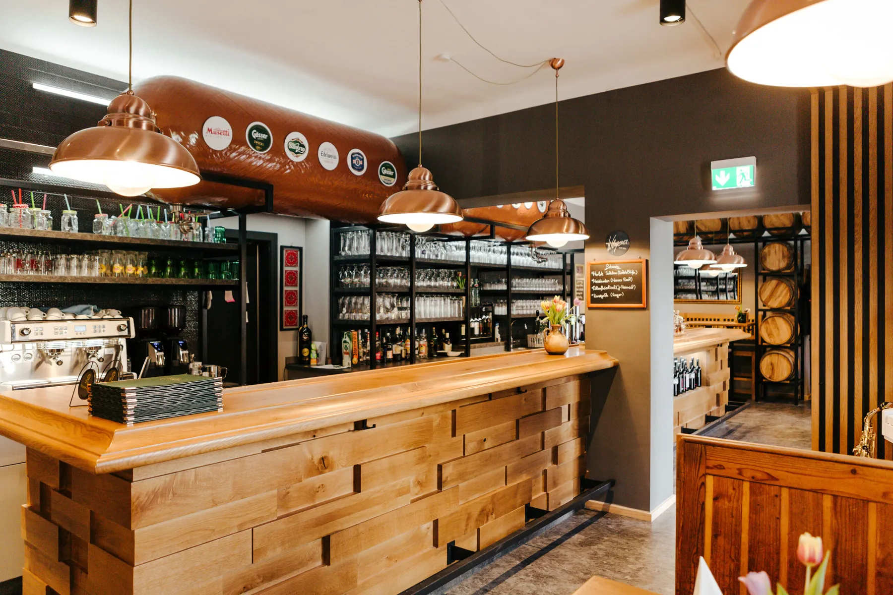
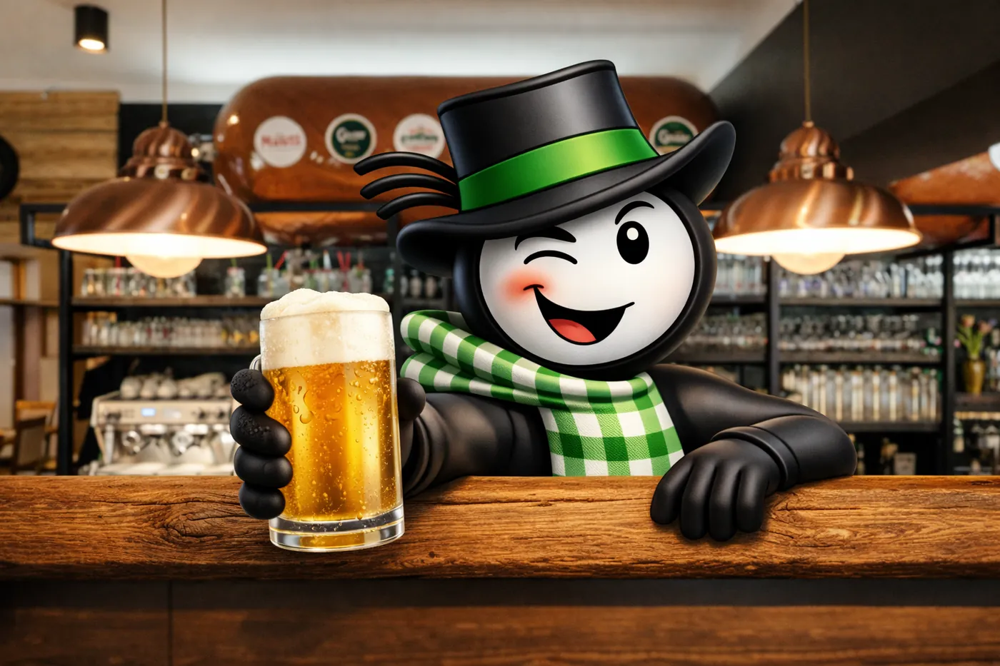

Bier direkt vom Tank
Bei uns kommt das Bier nicht aus der Flasche, sondern frisch aus dem Tank. Es wird direkt von der Brauerei geliefert und bei uns gelagert, ohne lange Wege. Das Ergebnis ist ein besonders frischer, runder Geschmack, wie man ihn sonst selten bekommt.
Unsere zwei Tanks fassen je 1.000 Liter, das Bier kommt frisch von der Brauerei Puntigamer. So kommt das Bier jung und lebendig ins Glas. Frischer geht Bier nicht.

Unser Bier im Video
Warum das besser schmeckt
- Frisch von der Brauerei
Direkt in den Tank, ohne Umweg über Flasche oder Fass. - Schonend und ruhig gelagert
Das Bier lagert ruhig im Tank, immer bei gleicher Temperatur. - Ohne Kohlensäure
Das Bier befindet sich im Tank und wird mittels Druckluft abgefüllt. Im Glas ist nur die Stammwürze. - Zwei Tanks mit je 1.000 Litern
Zusammen 2.000 Liter Bier, frisch gezapft direkt aus dem Tank. - Von der Brauerei Puntigamer
Gebraut in Graz, also aus nächster Nähe.

Unsere Biersorten
Die beste Bierauswahl bei uns: vom Tank, vom Fass und aus der Flasche.
- Vom TankPuntigamer PantherAus Graz, frisch gezapft aus unserem 1.000-Liter-Tank.
- Vom FassBirra MorettiItalienisches Lagerbier vom Fass.
- Vom FassAltbrünner GoldTschechisches Lagerbier von Starobrno aus Brünn, vom Fass.
- Vom FassGösser ZwicklNaturtrübes Zwickl aus der Steiermark, vom Fass.
- FlascheGösser StiftsbräuDas dunkle Gösser, aus der Flasche.
- FlascheWeihenstephanerBayerisches Bier aus der Flasche.
- SammeldoseTrooperEnglisches Bier in der Sammeldose.
Gut zu wissen
- BrauereiPuntigamer, Graz
- Tanks2 Tanks mit je 1.000 Litern
- AusschankDirekt vom Tank, ohne Kohlensäure